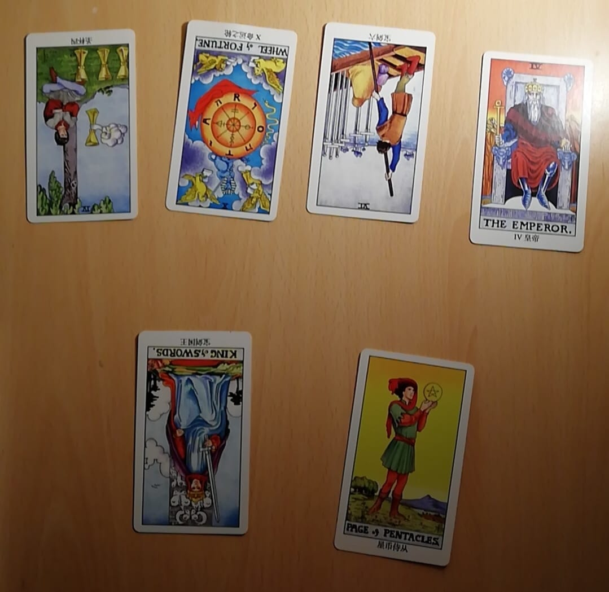

眨眼间又到了年末，当意识到是时候写一写总结的时候，我有些抗拒。回想今年发生的事情，这段记忆像一场梦，像一块破碎的拼图，细节部分不知道被谁踢进了角落里。我看着镜子中的自己，想起了《西部世界》第三季中的一幕：Bernard 坐在 Dolores 对面，“Start from the beginning. Tell me how you got here.”。
谁都没想到这一年以这样一种令人绝望的方式开启。一月十五日和家人打电话时我得知这两天的电视新闻里并没有提到新冠病毒，好心提醒在武汉读书的高中同学注意安全，却被说成是“无稽之谈”、“外网太夸张了”。随后的爆发与掩盖更让人难以接受，想不明白为什么会这样，一个个普通的家庭为什么要经历这些痛苦。我坐在电脑前，把被删掉的微博图片保存、转发，机械地重复着，仿佛这样就能抵挡那个无形的机器。不过是螳臂当车罢了，我很清楚。
二月二十号，记得那天米兰的风很大，阳光很刺眼，我背着空的背包，耳机里放的是《得意忘形》播客的某一期节目。时不时要压一压帽檐，为了盖住自卑。从 Parco Lambro 走回住处刚好路过大学，我很自然地混进学生们中，假装自己也刚刚结束了一天紧张的课程。上一次去上课是什么时候我已经记不清了，三个月前？半年前？教室的门像被施了黑魔法，每当靠近时我都会发自心底地恐惧，然后装作无事发生似的路过门口继续向前走，没有目的地。我在害怕什么？是挤满陌生面孔的阶梯教室？是周围飞快语速的意大利同学？还是坐在椅子上时身体和精神的痛苦？不知道，我知道的是自己只想逃离这个令人窒息的地方。
天气不错的时候我会去公园散步，并不是一个人，因为有播客和音乐陪伴。不过音乐听的越来越少了，不想让自己的思绪没有方向地飘得太远。最喜欢听张潇雨老师聊一些深刻的话题，大概只有像我这种自我意识比较强才会觉得这档播客听起来有意思吧。
走到离住处不远的十字路口，我犹豫了几分钟，拿出手机，拨通了母亲的微信电话。我全部说了出来，那些不愿承认的事实。“可是我实在是坚持不下去了”，“那就回家吧，妈只想让你过得开心“。听到这里我站在街上哭了。
在边缘徘徊时，我很幸运地抓住了最后一根救命稻草。夜里睡得很踏实，虽然肚子里空空的。
已经不想在意大利待下去了，排除掉北欧、荷兰、新加坡，我最后选择了爱尔兰。没想到去年三月裸考的雅思会在这时候派上用场，不由得感叹。
过了大概一周后我找机会把这件事告诉了两个室友，这次回国是单程票。那天晚上第一次喝酒喝到失去平衡感，我说以前我一直讨厌喝酒，因为酒精会影响思考，但很多事情仅仅靠想是得不到答案的，偶尔让大脑暂时解脱一下也未必是件坏事。真幸运能遇到他们，我想，但不知道自己是否值得被这样对待。接下来的几天里我们一起吃了火锅，一起看了韩剧《请回答1988》的前几集，很暖。后来在房间里自己看这部剧的时候，基本上每集都能让我哭很久，我并不关心狗焕与阿泽之争，剧中对于亲情的表达才是真正打动我的。另外我最喜欢善宇和宝拉这一对 :）
大概二月底的时候意大利疫情爆发，因为担心飞机上的感染风险我没有选择在三月初买机票，但没有想到后续大批的航班被取消。
四月八号我坐上了米兰飞温州的国航包机，十二小时的航程里没吃没喝也没觉得很难受，还好没有像大多数人一样穿不透气的防护服。下飞机后在直接在机场里做了核酸检测（鼻咽拭子太恐怖了），接着分批次坐大巴去隔离酒店。每天的三餐会定时放到房间门外的小凳子上，送餐人员挨个咚咚咚地敲门，“出来领餐啦！”。房间很大，床很舒服，网络很快。第二天意料之外收到了 UCC 的奖学金 offer，本来没抱多大希望毕竟我的雅思分数不高，要求提供的高中毕业后的经历不知道是加分项还是减分项。至少知道自己有学上了，很开心。陆续又收到了 Maynooth 和 TU Dublin 的 full offer，大概是因为今年申请的国际生人数太少吧，实在想不出自己哪里有优势。隔离的两周不能出门对我来说像呼吸一样自然。用这段时间刷完了一门在 Udemy 上买的编程课 “The Complete JavaScript Course”（顺便安利），虽然没记住多少但它是一个很好的开端。离开前酒店给每人送了保温杯和用泡沫盒装的黄鱼饼特产，对温州的好感度瞬间提升。
晚上九点多爸妈开车去首都机场接我，到家已经是凌晨了。我躺在床上望着熟悉的天花板，脑子里乱乱的，为什么我会落得如此下场呢？没一会儿便睡着了。
接下来的几个月里先后去了河北省第六人民医院和北京回龙观医院，诊断上写的是“中度抑郁状态”，开的药却是大剂量的抗抑郁药文拉法辛。我好像不太满意，因为医生没有明确地说出那个令人忌讳的词，“抑郁症”。仿佛是在疯狂地寻找一个标签，一个借口，用来解释为什么自己这几年一事无成，“这不是我的错”。
在医院陪床的几周里读完了朋友推荐的一本书《活下去的理由》，“爱把我困在了这里”。我无法用那么精准的文字来描述自己的痛苦，一方面是因为个人能力有限，另一方面是因为我害怕坦诚而又细致地面对自己混沌的生活，我害怕在清澈的水中看到自己真实的倒影。
待在家里的几个月很快就过去了，情绪失控的频率越来越低，我的状态正逐渐好起来，是时候再次出发了。
途径北京、广州、阿姆斯特丹、都柏林，两次转机加上近三小时的大巴，到宿舍时已经精疲力尽。科克和米兰比起来更像是一座小镇，安静而又美丽，和大多数人不同，我更喜欢生活在这里，喜欢带给我的「真实感」。
开学前因为几件不愉快的事情，我和曾经彼此视为家人的几个朋友决裂。很感激他们对我的关心和照顾，第一次感受到如此的温暖和“普通人”的快乐，第一次喝酒聊天到凌晨，第一次在朋友的宿舍过夜，第一次面对陌生的天花板醒来。毕竟不是同一个世界里的人，我总是这样安慰自己，但想起来还是会心痛。不过没有什么值得后悔的，如果时光倒流我还是会作出相同的选择。
整学期的网课体验并没有想象中的糟糕，好处是我和几个同学可以坐在一起考试，虽然略有愧疚。很开心地发现自己能够几乎毫不费力地听懂全部内容，或许是因为习惯了 1.5 倍速刷课，另外觉得爱尔兰口音很可爱。暂时没有课业的压力，我获得了更多的时间来学习自己喜欢的东西，比如前端开发、游戏引擎和像素画，做一些有意义的 side-project。
有几周每天的写代码时间超过了十小时，看到这个数据时我把自己都吓了一跳。我喜欢编程是因为它是纯粹的理性表达、逻辑表达，不会掺杂进任何感情，这对于感性、高敏感的我来说是一个让精神放松的活动，或许有些难以理解。和文字写作不同，代码的产出不需要我直面自己的内心。
豆瓣友邻的一条转发作为契机促使我去读了这三本表达女性主义的小说《房思琪的初恋乐园》、《82年生的金智英》和《坡道上的家》，很痛苦，“因为寻常，所以绝望”。
前段时间认识了一个会塔罗牌占卜的同学，“算命嘛？”“好呀！”。我提出的问题是“新的恋情”，结果算是比较积极吧。说来很有趣，学理工科的人竟然会相信如此“不科学”的东西，以前的我一定会嗤之以鼻吧。
标题中的「破碎与重组」我觉得很适合作为一年的总结。“What doesn’t kill you makes you stronger”，这句话很鸡汤，但在一些情况下可以适用。我更喜欢这个「重组」后的自己，更加包容，更加勇敢，更加自信。既然选择了继续活着那就不如按照自己的想法而活，与别人的价值观或普世价值观无关，决定我如何活着的人，只能是我自己。从室友口中听到有人说我写自己的抑郁症会把人吓跑还是别写了，后来想想其实根本不需要在意甚至因此而生气，筛掉一部分人正好省去了不必要的社交成本。
就暂时写到这里吧，没有关于影视的总结，因为比起往年并没有看多少。印象比较深的有电影《1917》、《心灵捕手》、《梦之安魂曲》，美剧《西部世界》第三季、《后翼弃兵》、《战士》第二季、《了不起的麦瑟尔夫人》前两季，韩剧《请回答1988》、《甜蜜家园》。
至于新年的景愿，一是想要恋爱，二是希望能找到一份实习。
很感谢每一个让我与世界产生羁绊的人。祝我自己和大家，新年快乐。